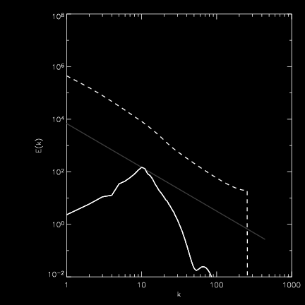
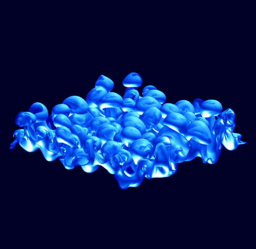
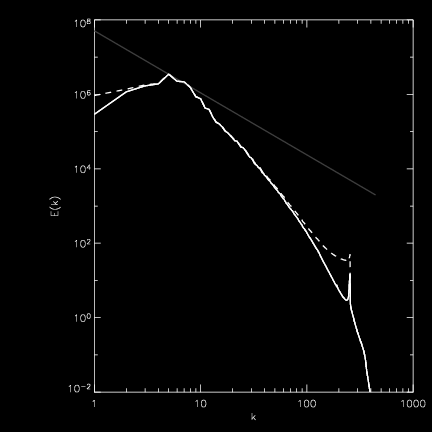
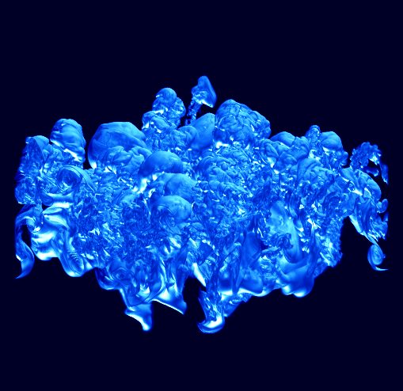
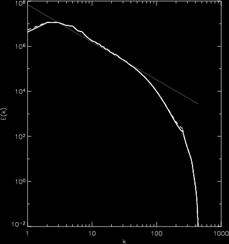
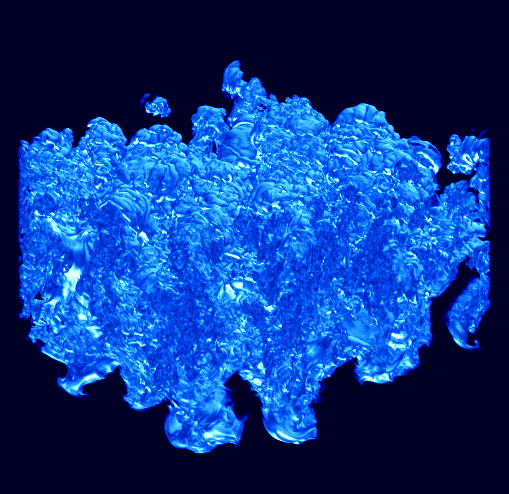
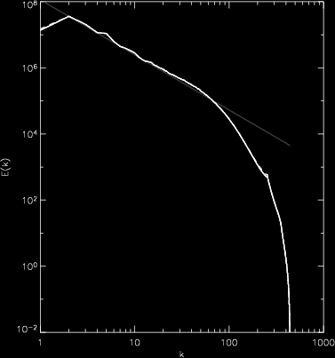

Zingale, M., Woosley, S. E. Rendleman, C. A., Day, M. S., Bell, J. B. 2006, ApJ, 632, 1021;
Zingale, M., Woosley, S. E., Bell, J. B., Day, M. S., & Rendleman, C. A. 2005, Proceedings of SciDAC 2005, Journal of Physics: Conference Series, 16, 405
in collaboration with the CCSE/LBL group.
We have extended our two-dimensional reactive Rayleigh-Taylor study to three-dimensions, focusing on the flamelet regime. We want to understand the nature of flame-generated turbulence in 3d, and to determine whether the less computationally expensive 2d calculations provide an accurate description of the flame. All of these calculations are fully resolved---no flame model is used. These are large calculations, encompassing over 170 million zones at the end.
This calculation is at a density of 1.5 x 107 g/cc, appropriate to the late stages of a Type Ia supernova. The energy generation is a single C12+C12 thermonuclear fusion rate.
Power spectrum of the 3d RT. The solid curve is the uncorrected velocity power spectrum. The dashed curve is after projecting out the expansion components, and the dotted straight line is a n=-5/3 power law. At late times, we get a Kolmogorov power spectrum for the kinetic energy.
| Image | Power Spectrum | |
|---|---|---|
| step = 0, time = 0 s | ||
|
 | |
| | ||
| step = 120, time = 6.62e-4 s | ||
|  |  | |
| | ||
| step = 240, time = 9.43e-4 s | ||
|  |  | |
| | ||
| step = 360, time = 1.16e-3 s | ||
|  |  | |
Animation of the carbon mass fraction for this simulation.
Also available as an AVI movie.

As shown above, the kinetic energy power spectrum for the 3-D simulation follows the familiar Kolmogorov -5/3 scaling. From the results of our 2-D study, we can look at how the power spectrum differs with the dimensionality.
The figure on the right shows the power spectrum from the 3-D run (yellow) and the two dimensional run (cyan). The solid line is a -5/3 power law and the dotted line is a -11/5 power law. As we see, only the 3-D simulation appears to obey Kolmogorov statistics. The 2-D simulation is more consistent with Bolgiano-Obukov turbulence -- that arising from a potential energy cascade.
In generating this data, it is essential to run a large enough simulation such that there are a lot of RT bubbles that merge together.
These calculations were carried out on the NERSC IBM/SP seaborg and the NASA/Ames Columbia machine. This research is supported by DOE grant No. DE-FC02-01ER41176 to the Supernova Science Center/UCSC.